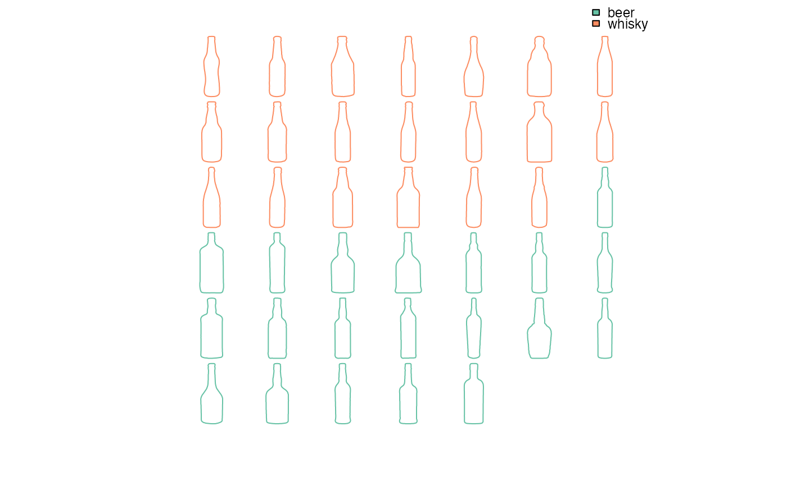

Will soon replace panel. See examples and vignettes.
Usage
mosaic_engine(
coo_list,
dim,
asp = 1,
byrow = TRUE,
fromtop = TRUE,
sample = 60,
relatively = FALSE,
template_size = 0.92
)
mosaic(x, ...)
# S3 method for class 'Out'
mosaic(
x,
f,
relatively = FALSE,
pal = pal_qual,
sample = 60,
paper_fun = paper_white,
draw_fun = draw_outlines,
legend = TRUE,
dim = NA,
asp = 1,
byrow = TRUE,
fromtop = TRUE,
...
)
# S3 method for class 'Opn'
mosaic(
x,
f,
relatively = FALSE,
pal = pal_qual,
sample = 60,
paper_fun = paper_white,
draw_fun = draw_curves,
legend = TRUE,
dim = NA,
asp = 1,
byrow = TRUE,
fromtop = TRUE,
...
)
# S3 method for class 'Ldk'
mosaic(
x,
f,
relatively = FALSE,
pal = pal_qual,
sample = 60,
paper_fun = paper_white,
draw_fun = draw_landmarks,
legend = TRUE,
dim = NA,
asp = 1,
byrow = TRUE,
fromtop = TRUE,
...
)Arguments
- coo_list
listof shapes- dim
numericof length 2, the desired dimensions for rows and columns- asp
numericthe yx ratio used to calculatedim(1 by default).- byrow
logicalwhether to order shapes by rows- fromtop
logicalwhether to order shapes from top- sample
numericnumber of points to coo_sample- relatively
logicalifTRUEuse coo_template_relatively or, ifFALSE(by default) coo_template. In other words, whether to preserve size or not.- template_size
numericto feedcoo_template(_relatively). Only useful to add padding around shapes when the default value (0.95) is lowered.- x
any Coo object
- ...
additional arguments to feed the main drawer if the number of shapes is > 1000 (default: 64). If non-numeric (eg
FALSE) do not sample.- f
factor specification to feed fac_dispatcher
- pal
one of palettes
- paper_fun
a papers function (default:
paper)- draw_fun
one of drawers for
pile.list- legend
logicalwhether to draw a legend (will be improved in further versions)
See also
Other grindr:
drawers,
layers,
layers_morphospace,
papers,
pile(),
plot_LDA(),
plot_NMDS(),
plot_PCA()
Examples
# On Out ---
bot %>% mosaic
bot %>% mosaic(~type)

# As with other grindr functions you can continue the pipe
bot %>% mosaic(~type, asp=0.5) %>% draw_firstpoint
 # On Opn ---- same grammar
olea %>% mosaic(~view+var, paper_fun=paper_dots)
# On Opn ---- same grammar
olea %>% mosaic(~view+var, paper_fun=paper_dots)
 # On Ldk
mosaic(wings, ~group, pal=pal_qual_Dark2, pch=3)
# On Ldk
mosaic(wings, ~group, pal=pal_qual_Dark2, pch=3)
 # On Out with different sizes
# would work on other Coo too
shapes2 <- shapes
sizes <- runif(30, 1, 2)
shapes2 %>% mosaic(relatively=FALSE)
# On Out with different sizes
# would work on other Coo too
shapes2 <- shapes
sizes <- runif(30, 1, 2)
shapes2 %>% mosaic(relatively=FALSE)
 shapes2 %>% mosaic(relatively=TRUE) %>% draw_centroid()
shapes2 %>% mosaic(relatively=TRUE) %>% draw_centroid()